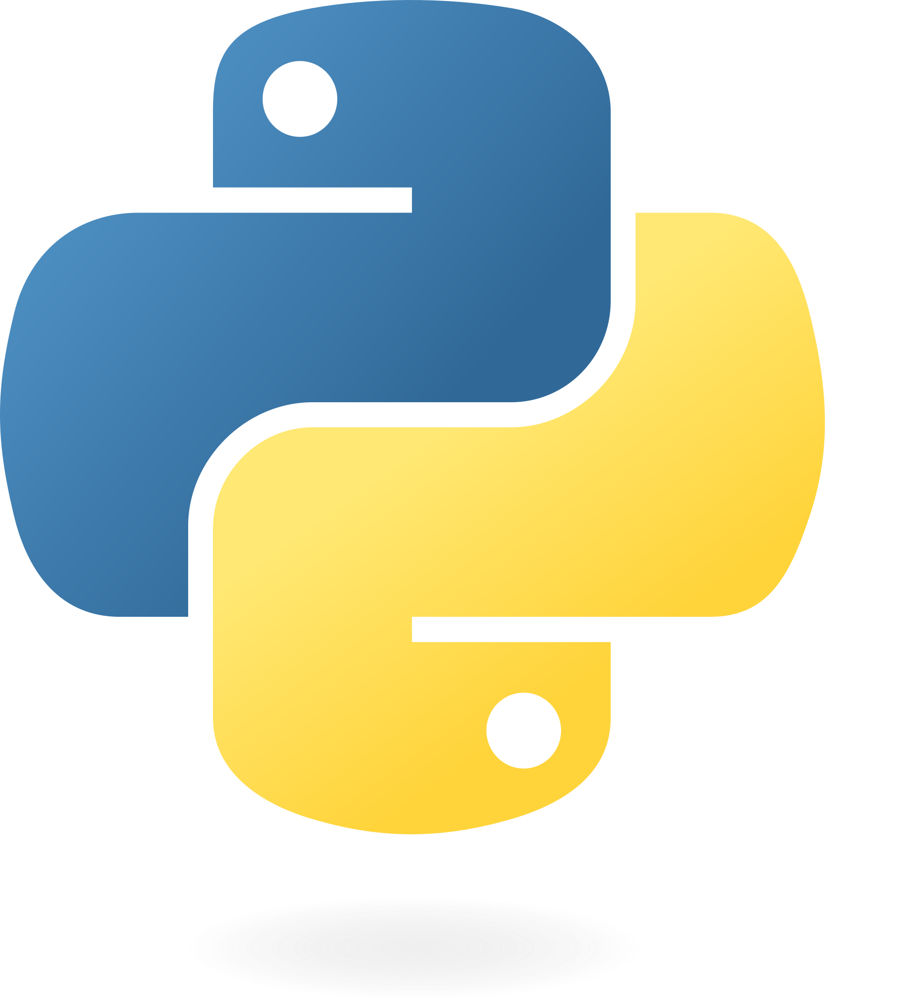
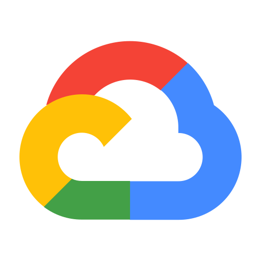
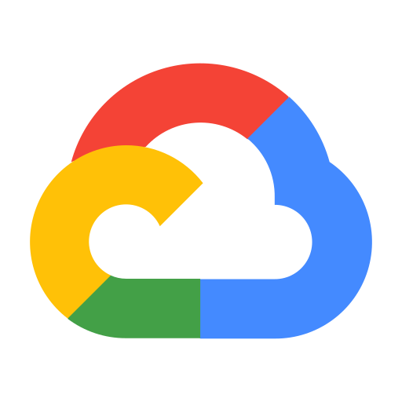

Technologies Learned



 



I'm Aryaan Verma, a senior at the University of Florida pursuing a Bachelor of Science in Computer Science with a minor in Mathematics. I'm passionate about building fast, scalable applications and enjoy the process of shipping products that solve real-world problems. I have experiences ranging from developing cloud-based tools and automating workflows at Franklin Templeton Investments to leading the creation of an offline education tracking app for underserved schools in Ghana. I enjoy automating processes and creating sustainable app infrastructure to grow as the app does. I hope to continue working on impactful projects that push me to grow as a developer and as a leader.
Outside of computer science, I'm fascinated by startups and innovative tech solutions. I'm currently involved in a biotechnology startup, where I'm exploring ways to merge technology with healthcare. It is fulfilling to me to be able to use my experience creating software applications that have a tangible effect on people. My goal is to continue building innovative products that make a meaningful difference in people's lives.
When I'm not coding/building, you'll find me dancing or in the gym. I co-founded Gator Bhangra, UF's Indian cultural Bhangra dance team, and still compete in Bhangra competitions today. I've traveled all over to Pittsburgh, Washington D.C., Cleveland, and many more cities for competitions. I also enjoy hitting the gym and training in weightlifting. Staying active and creative outside of tech keeps me balanced and driven.
Bachelor of Science in Computer Science
Minor in Mathematics
Herbert Wertheim College of Engineering
GPA: 3.7
Graduation Year: May 2025
Founding Engineer
Software Developer Intern
Cloud Engineering/DevOps Intern (June 2023 – Aug 2023)
Software Engineering Team Lead
RideStork is a carpool orchestration platform that optimizes matches and routes to reduce travel time and improve carpool efficiency for events.
Automated system to categorize and label marathon photos using Google OCR and BIB numbers for quick and accurate photo retrieval.
A social music-sharing app that allows users to create playlists and share their favorite songs with friends in real-time.
Research projects including Renewable Energy Law LLM analysis and a Database for academic research papers in CS.